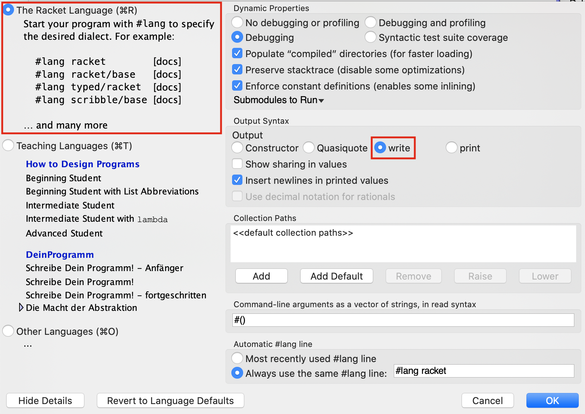
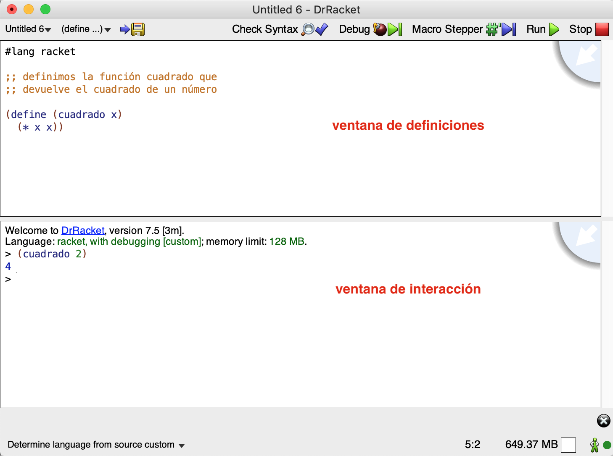
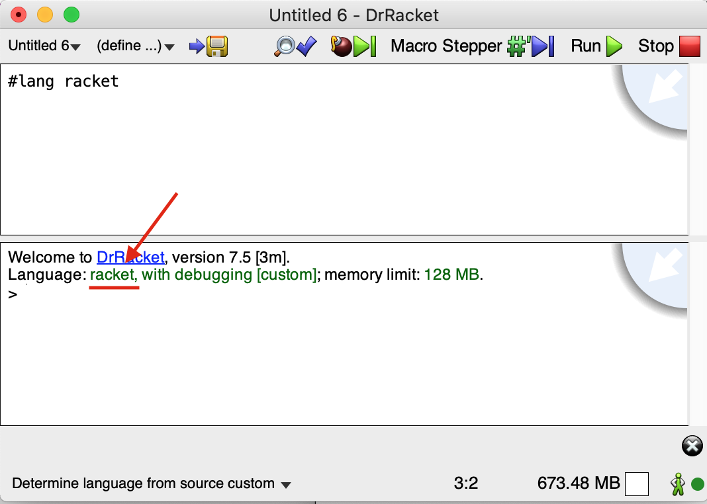

Seminar 1: Scheme Seminar¶
1. The Scheme Programming Language¶
Scheme is a programming language that emerged at the MIT laboratories in 1975, when Guy L. Steele and Gerald J. Sussman were looking for a language with very clear and simple semantics.
Scheme is a dialect of Lisp. It is an interpreted language, highly expressive, and it supports several paradigms. It was influenced by lambda calculus. The development of Scheme has been slow because the people who standardized Scheme have been very conservative about adding new features, since quality has always been more important than business usefulness. For that reason, Scheme is considered one of the best designed general-purpose languages. Learning Scheme will make you better programmers when you use other programming languages.
1.1. The Racket Programming Language¶
What are we going to learn? Racket or Scheme? The answer is: Scheme working in Racket.
Racket was designed in 1995 based on Scheme, extending it with new features, such as the ability to extend it with libraries. The language includes very useful libraries (graphics libraries, HTTP server connectivity, database connectivity, etc.) that modernize the original language and turn it into a practical language for building all kinds of applications, from video games to web servers. However, we are only going to use Racket to learn the part that corresponds to the original Scheme core.
1.2. The DrRacket Programming Environment¶
Let us see a short introduction to the programming environment provided by DrRacket. You can find more information in the original documentation.
1.2.1. Downloading DrRacket¶
DrRacket is cross-platform and can run on Linux, macOS, or Windows. You can download the latest version at the following link:
1.2.2. Configuring DrRacket¶
To work correctly with DrRacket, we must make sure that the active
language is The Racket Language and that the output syntax has the
write option enabled, as shown in the following image:

We can change that option using the following menus:
Language > Choose Language (select The Racket Language) > Show
details > Output Syntax > write
This option determines the output syntax of the language interpreter, which is going to be one of the fundamental elements for learning Scheme.
Warning
Once these options have been selected, the configuration is saved in the user preferences. In the EPS labs, you need to perform this configuration at the beginning of every session.
When we start DrRacket, we can see that it has three parts: a row of buttons at the top, two editing panels in the middle, and a status bar at the bottom.

The top editing panel is the definitions window. It is used to
implement functions, such as the cuadrado function in the example.
The bottom panel, called the interaction window, is used to
evaluate expressions interactively using the Racket interpreter. By
clicking the Run button, the program in the definitions window is
evaluated, making those definitions available in the interaction
window. Thus, given the definition of cuadrado, after clicking
Run, we can type the expression (cuadrado 2) into the
interpreter, it will be evaluated, and the result will be displayed,
in this case 4.
DrRacket supports many languages and Scheme dialects. We are going to use the default language, the Racket language. To do that, no extra action is needed, we just have to make sure of the following:
-
At the bottom of the window it shows "Determine language from source"
-
The file being edited in the editing panel begins with the line:
```racket
lang racket¶
```
-
Finally, if we click the Run button, we will check that this language is loaded into the interpreter.

1.2.3. How to Write in the Interpreter¶
The Racket interpreter is located in the lower window. The interpreter performs a loop in which an expression is read, its result is evaluated, and then it is printed. This type of loop is called a REPL (Read-Evaluate-Print Loop).
The expressions we type into the interpreter are stored in a history. We can retrieve previous expressions and move through that history using the following key combinations:
CTRL+ up/down arrow
That key combination may be assigned to other functions in your operating system configuration. You can change that configuration or use DrRacket's alternative combination:
ESC+p(previous) /n(next)
We can also select an expression with the cursor and, when pressing
RETURN, it is automatically copied into the prompt.
2. The Scheme Language¶
2.1. Let Us Start by Trying Some Examples¶
Scheme is an interpreted language. Let us start DrRacket and type some expressions in the interaction window. The interpreter will analyze the expression and display the resulting value.
racket
2 ; ⇒ 2
(+ 2 3) ; ⇒ 5
(+ (* 2 3) (- 3 1)) ; ⇒ 8
Expressions in Scheme use a form called Cambridge prefix notation (the Cambridge name comes from Cambridge, Massachusetts, where MIT is located and where Lisp was designed), in which the expression is delimited by parentheses and the operator is followed by the operands. The syntax is the following:
racket
(<function> <arg1> ... <argn>)
In Scheme we can interpret the opening parenthesis ( as the trigger
that launches the function that follows it. The way Scheme evaluates
an expression is very simple:
- It evaluates each argument.
- It applies the function named after the parenthesis to the values obtained from the previous evaluation.
text
(+ (* 2 3) (- 3 (/ 12 3)))
⇒ (+ 6 (- 3 (/ 12 3)))
⇒ (+ 6 (- 3 4))
⇒ (+ 6 -1)
⇒ 5
There are functions that accept a variable number of arguments, such as addition or subtraction:
racket
(+) ; ⇒ 0
(+ 2 4 5 6) ; ⇒ 17
(- 10 2 3) ; ⇒ 5
In the case of subtraction, the arguments are subtracted from left to right (the second argument is subtracted from the first, the third is subtracted from the result, and so on):
racket
(- 4 5 4 8) ; ⇒ -13
(- 4 (+ 5 4) 8) ; ⇒ -13
(- 4 (+ 5 4 8)) ; ⇒ -13
In Scheme, the terms function and procedure mean the same thing and
are used interchangeably. Examples of functions or procedures are
+, -, /, *. In Scheme, evaluating a function always returns a
value, unless an error occurs and stops the evaluation:
racket
(* (+ 3 4) (/ 3 0))
; Error /: division by zero
2.2. Defining Identifiers and Functions¶
Scheme is a multi-paradigm language but mainly a functional one, and one of its main features is that programs are built by defining functions.
We can use the special form define in the interpreter to define
variables (identifiers associated with values) and functions, as seen
this week in theory.
We can define identifiers in the interaction window to make it easier to write expressions:
racket
(define a (+ 2 (* 3 4)))
a ; ⇒ 14
(+ a (* 2 3)) ; ⇒ 20
There are identifiers (in Scheme we call them symbols) that are
already defined in the Racket interpreter, for example pi:
racket
pi ; ⇒ 3.141592653589793
(sin (/ pi 2)) ; ⇒ 1.0
To implement a function, define is also used, with the following
syntax:
racket
(define (<function-name> <args>)
<function-body>
)
For example, let us implement a function that takes two numbers as parameters and returns the sum of their squares:
racket
(define (suma-cuadrados x y)
(+ (* x x) (* y y)))
If we call the function with 2 and 3 as parameters, the function
returns the number 13:
racket
(suma-cuadrados 2 3) ; ⇒ 13
Note
Unlike most programming languages, Scheme does not use the word
return to indicate that a function returns a value. Functions are
defined with a single expression, and the result computed by that
expression is always what gets returned.
2.3. Weakly Typed Language¶
Let us examine a very important feature of Scheme: being a weakly typed language. Among other things, this means that variables, functions, and arguments do not have a declared type. It is possible to use values of different data types to assign successively to the same variable (in an imperative language) or to pass as a parameter to the same function (in a functional language). For example, JavaScript or PHP are also weakly typed imperative languages.
Let us see how this works in Scheme using the previous function as an example.
racket
(define (suma-cuadrados x y)
(+ (* x x) (* y y)))
We can see that the arguments x and y have no type. If the
function is called with some data that is not a number, the
interpreter will not detect any error and will allow those data to be
assigned to the arguments x and y. The error occurs when the
multiplication is actually evaluated.
We can check this with the following example, which shows the resulting error message:
```racket
(suma-cuadrados 10 "hola") *: contract violation expected: number? given: "hola" argument position: 1st other arguments...: ```
Later we will see that there are different types of numbers that we can operate on using division, addition, and multiplication. The defined function works correctly for all of them.
We can pass integers, real numbers, or even fractions to the function:
racket
(suma-cuadrados 2 5) ; ⇒ 29
(suma-cuadrados 2.4 5.8) ; ⇒ 39.4
(suma-cuadrados (/ 2 3) (/ 3 5)) ; ⇒ 181/225
In the last expression, fractional numbers can also be passed directly; the Scheme interpreter understands that notation:
racket
(suma-cuadrados 2/3 3/5) ; ⇒ 181/225
2.4. Simple Data Types¶
Scheme primitives consist of a set of data types, special forms, and functions built into the language. Throughout the course we will introduce these primitives.
Let us review some simple Scheme data types, as well as some primitive functions to work with values of those types.
- Booleans
- Numbers
- Characters
2.4.1. Booleans¶
A boolean is a truth value, which can be true or false. In Scheme, we
have the symbols #t and #f to express true and false
respectively, but in many operations any value different from #f is
considered true. Examples:
```racket
t ; true¶
f ; false¶
(> 3 1.5) ; ⇒ #t (= 3 3.0) ; ⇒ #t (mathematical equality) (equal? 3 3.0) ; ⇒ #f (type equality) (or (< 3 1.5) #t) ; ⇒ #t (and #t #t #f) ; ⇒ #f (not #f) ; ⇒ #t (not 3) ; ⇒ #f (accepts any argument; ; only returns #t when the argument is #f) ```
2.4.2. Numbers¶
The number of numeric types supported by Scheme is large, including integers with different precision, rational numbers, complex numbers, and inexact numbers. For example:
racket
(/ 1 3) ; ⇒ returns the fraction 1/3
(+ 1/3 1/3) ; ⇒ 2/3
(+ 2 3 4 2) ; ⇒ 11 (the + function accepts a variable number of arguments)
(+ 1/3 0.0) ; real number with infinite precision ⇒ 0.3333333333333333
(* (+ 1/3 0.0) 3) ; ⇒ 1
(sqrt -1) ; ⇒ 0+1i (imaginary number)
(+ 3+2i 2-i) ; ⇒ 5+1i (operations with imaginary numbers)
2.4.2.1. Some Number Primitives¶
racket
(<= 2 3 3 4 5) ; ⇒ #t (arguments are in increasing order)
(max 3 5 10 1000) ; ⇒ 1000
(/ 22 4) ; returns a fraction
(quotient 22 4) ; ⇒ 5 (integer division quotient)
(remainder 22 4) ; ⇒ 2 (integer division remainder)
(equal? 0.5 (/ 1 2)) ; ⇒ #f (different data types)
(= 0.5 (/ 1 2)) ; ⇒ #t (mathematical equality)
(abs (* 3 -2)) ; ⇒ 6 (absolute value)
(sin 2.2) ; related: cos, tan, asin, acos, atan
(expt 4 2) ; ⇒ 16 (exponent: 4 raised to 2)
2.4.2.2. Rounding Functions¶
racket
; (floor x) returns the largest integer not greater than x
; (ceiling x) returns the smallest integer not less than x
; (truncate x) returns the integer closest to x whose absolute value
; is not greater than the absolute value of x
; (round x) returns the integer closest to x, rounded
(floor -4.3) ; ⇒ -5.0
(floor 3.5) ; ⇒ 3.0
(ceiling -4.3) ; ⇒ -4.0
(ceiling 3.5) ; ⇒ 4.0
(truncate -4.3) ; ⇒ -4.0
(truncate 3.5) ; ⇒ 3.0
(round -4.3) ; ⇒ -4.0
(round 3.5) ; ⇒ 4.0
2.4.2.3. Predicates on Numbers¶
Functions that return a boolean are called predicates.
racket
(positive? -4) ; ⇒ #f (-4 is not positive)
(negative? -4) ; ⇒ #t (-4 is negative)
(zero? 0.2) ; ⇒ #f (checks whether the result is zero)
(even? 2) ; ⇒ #t (checks whether it is even)
(odd? 3) ; ⇒ #t (checks whether it is odd)
In Scheme we have predicates that allow us to check the type of a parameter. In the case of numbers, the number type:
racket
(number? 1) ; ⇒ #t (argument 1 is a number)
(integer? 2.3) ; ⇒ #f (argument 2.3 is not an integer)
(integer? 4.0) ; ⇒ #t (the number 4.0 is mathematically identical
; to the number 4)
(real? 1) ; ⇒ #t
2.4.3. Characters¶
International characters are supported and encoded in UTF-8.
```racket
\a¶
\A¶
\space¶
\ñ¶
\á¶
```
2.4.3.1. Operations on Characters¶
racket
(char<? #\a #\b) ; ⇒ #t (#\a comes before #\b)
(char-numeric? #\1) ; ⇒ #t (#\1 is a number)
(char-alphabetic? #\3) ; ⇒ #f (#\3 is a number)
(char-whitespace? #\tab) ; ⇒ #t (the tab character is whitespace)
(char-upper-case? #\A) ; ⇒ #t (#\A is an uppercase letter)
(char-lower-case? #\a) ; ⇒ #t (#\a is a lowercase letter)
(char-upcase #\ñ) ; ⇒ #\Ñ (turns the letter into uppercase)
(char-downcase #\A) ; ⇒ #\a (turns the letter into lowercase)
(char->integer #\space) ; ⇒ 32 (the space character occupies position 32)
(integer->char 32) ; ⇒ #\space (same as above but the other way around)
(char->integer (integer->char 5000)) ; ⇒ 5000
2.5. Compound Data Types¶
Scheme also has a set of compound data types that allow us to group simple elements of the data types seen above.
- Strings
- Pairs
- Lists
We will study the last two in detail in future theory classes.
2.5.1. Strings¶
Strings are finite sequences of characters.
racket
"hola"
"La palabra \"hola\" tiene 4 letras"
String Constructors¶
racket
(make-string 5 #\o) ; ⇒ "ooooo" (constructor function that takes an integer and a character)
(string #\h #\o #\l #\a) ; ⇒ "hola" (constructor function that takes a variable number of characters)
Operations with Strings¶
racket
(substring "Hola que tal" 2 4) ; ⇒ "la" (substring from position 2 to 4, excluding 4)
(string? "hola") ; ⇒ #t (predicate that checks the argument is a string)
(string->list "hola") ; ⇒ (#\h #\o #\l #\a) (returns a list of characters)
(string-length "hola") ; ⇒ 4 (string length)
(string-ref "hola" 0) ; ⇒ #\h (character at position 0)
(string-append "hola" "adios") ; ⇒ "holaadios" (string concatenation)
String Comparators¶
racket
(string=? "Hola" "hola") ; ⇒ #f
(string=? "hola" "hola") ; ⇒ #t
(string<? "aab" "cde") ; ⇒ #t (comparison uses lexicographic order)
(string>=? "www" "qqq") ; ⇒ #t
2.5.2. Pairs¶
Pairs are a fundamental element of Scheme. A pair is a compound type formed by two elements (not necessarily of the same type).
racket
(cons 1 2) ; ⇒ (1 . 2) (cons creates a pair)
(cons #t 3) ; ⇒ (#t . 3) (elements of different types)
(car (cons "hola" 2)) ; ⇒ "hola" (left element of the pair)
(cdr (cons "bye" 5)) ; ⇒ 5 (right element of the pair)
When we evaluate the previous expressions in the interpreter, Scheme displays the result of building the pair with the following syntax:
text
(left-element . right-element)
For example:
racket
(cons 1 2) ; ⇒ (1 . 2)
Scheme's characteristic of evaluating expressions from the inside out
applies to all functions, including this cons function that builds
pairs:
racket
(cons (+ 2 3) (string-append "hola" "adios")) ; ⇒ (5 . "holaadios")
(cons (= 2 2.0) (* 2 (+ 1 3))) ; ⇒ (#t . 8)
Pairs can also contain other pairs. We will see that this is how data structures are defined in Scheme:
racket
(define p1 (cons 1 2)) ; we define a pair made of 1 and 2
(cons p1 3) ; we define a pair made of the pair (1 . 2) and 3
; ⇒ ((1 . 2) . 3)
(cons (cons 1 2) 3) ; same as the previous expression
; ⇒ ((1 . 2) . 3)
Sometimes printing a pair is not that straightforward for Scheme. If the pair is in the right part of the main pair, the interpreter prints this, which does not correspond to what we expect:
racket
(cons 1 (cons 2 3)) ; ⇒ (1 2 . 3)
We will explain why later on.
2.5.3. Lists¶
One of the fundamental elements of Scheme, and of Lisp, is the list. It is a compound type formed by a finite set of elements (not necessarily of the same type). Let us see how to define, create, traverse, and concatenate lists.
We can create a list with the list function:
racket
(list 1 2 3 4) ; list creates a list
Lists are represented inside parentheses:
racket
(list 1 2 3 4) ; ⇒ (1 2 3 4)
The simplest way to work with a list is by using the first
function to get its first element and rest to get the rest of the
list.
racket
(define l1 (list 1 2 3 4)) ; the list (1 2 3 4) is created and stored in l1
(first l1) ; ⇒ 1 (first element of l1)
(rest l1) ; ⇒ (2 3 4) (rest of the list, removing the first element)
Operations on lists build new lists and do not modify the list passed
as an argument. In the previous example, the list l1 still contains
the original list (1 2 3 4).
The rest of a list always returns another list. The rest of a
single-element list is the empty list, which in Scheme is written
as ().
racket
(define l2 (list 1 2 3))
(rest l2) ; ⇒ (2 3)
(rest (rest l2)) ; ⇒ (3)
(rest (rest (rest l2))) ; ⇒ () empty list
null ; ⇒ () empty list
In Racket, the identifier null is also defined with the empty list
as its value:
racket
null ; ⇒ () empty list
In Scheme, lists are implemented with pairs. A list is either an
empty list () or a pair whose first element is the first element of
the list and whose second element is the rest of the list. We will
see this in more detail later on.
Since a list is implemented with a pair, the functions car and cdr
can also be used with lists. The car function returns the first
element of the list and the cdr function returns the rest:
racket
(define l3 (list 10 20 30 40))
(car l3) ; ⇒ 10
(cdr l3) ; ⇒ (20 30 40)
Another way to define a list is by using quote, an apostrophe at
the beginning of the list. We will see a more detailed explanation in
theory of how this quote works.
For example, we can define lists using the following expressions:
racket
'(1 2 3) ; ⇒ builds the list (1 2 3)
(rest '(1 2 3)) ; ⇒ (2 3)
(define l3 '(1 2 3)) ; builds the list (1 2 3) and stores it in l3
During the seminar we will use both the list function and quote
to build lists.
The list function with no arguments returns an empty list, and the
function null? checks whether a list is empty. The empty list can
also be defined with quote: '().
Later we will see that the empty list is the base case of many recursive functions that traverse lists.
racket
(list) ; ⇒ ()
(null? (list)) ; ⇒ #t
(null? '()) ; ⇒ #t
(null? (list 1 2 3)) ; ⇒ #f
We can also build a new list by adding an element to the head of an
existing list using the cons function (the same function used for
pairs), passing an element and a list as arguments:
racket
(cons elemento lista)
For example:
racket
(cons 1 '(2 3 4 5)) ; ⇒ (1 2 3 4 5) (1 is added to the head of the list (2 3 4 5))
(cons 1 '()) ; ⇒ (1) (1 is added to the empty list)
(cons 1 (cons 2 (list))) ; ⇒ (1 2)
(cons 1 (cons 2 (cons 3 '()))) ; ⇒ (1 2 3)
Important
When we want to add data to the head of a list, the list must always be the second argument of the function call. If we make a mistake and pass the list as the first argument and the value to add as the second one, Scheme does not report an error; instead, it builds a pair whose first element is a list and whose second element is the data.
For example:
racket
(cons '(1 2 3) 4) ; ⇒ ((1 2 3) . 4)
We can also use the append function to concatenate two or more
lists:
racket
(define l3 (list 1))
(define l4 (list 2 3 4))
(define l5 (list 5 6))
(append l3 l4 l5) ; ⇒ (1 2 3 4 5 6)
(append l3 '()) ; ⇒ (1)
(append (list 1 2 3) (list 4)) ; ⇒ (1 2 3 4)
Note
If we want to add data to the end of a list, we can do it by
turning it into a list and using append to concatenate that list
at the end of the first one:
```racket ;;; We define the function cons-al-final (define (añade-al-final x lista) (append lista (list x)))
;;; We test it (añade-al-final 10 (list 1 2 3)) ; ⇒ (1 2 3 10) ```
As with pairs, lists can contain different types of data:
racket
(list "hola" "que" "tal") ; ⇒ ("hola" "que" "tal") (list of strings)
(cons "hola" (list #t #\a 3 4)) ; ⇒ ("hola" #t #\a 3 4) list of different data types
A list can even contain other lists:
racket
(list (list 1 2) 3 4 (list 5 6)) ; ⇒ ((1 2) 3 4 (5 6)) (list containing lists)
'((1 2) 3 4 (5 6)) ; ⇒ the same list, defined with quote
(cons (list 1 2) (list 3 4 5)) ; ⇒ ((1 2) 3 4 5)) (a list is added as the first element)
(cons '(1 2) '(3 4 5)) ; ⇒ the same expression as above, with quote
Scheme's characteristic of evaluating expressions from the inside out
applies to all functions, including this list function that builds
lists:
racket
(list (+ 1 2) (string-append "hola" "adios") (* 2 3)) ; ⇒ (3 "holaadios" 6)
(list (cons 1 2) (cons 3 4)) ; ⇒ ((1 . 2) (3 . 4)) (list containing pairs)
In theory class we will study lists in Scheme in greater depth, how they are implemented, and how they are used to create more complex data structures such as trees. For this introductory seminar, these basic functions that let us create, combine, and obtain elements from lists are enough.
3. Conditional Structures¶
As in any programming language, conditional or decision structures in Scheme allow us to select which part of an expression we evaluate depending on the result of a conditional expression. We will study them in more detail in theory classes. For now, let us look at some examples of how they work.
In Scheme we have two kinds of conditional structures: if and
cond.
3.1. if¶
It performs a conditional evaluation of the expressions that follow
it according to the result of a condition. An if expression always
has four elements: the if itself, the condition, the expression
that is evaluated if the condition is true, and the expression that
is evaluated if the condition is false:
racket
(if (> 2 3) "2 es mayor que 3" "2 es menor o igual que 3")
When writing code in Scheme, it is common to put the if and the
condition on one line and the other two expressions on the following
lines:
racket
(if (> 2 3)
"2 es mayor que 3"
"2 es menor o igual que 3")
In the expressions that return the value when the condition is true
or false, any Scheme expression can be written, including another
if:
racket
(if (> 2 3)
(if (< 10 5)
"2 es mayor que 3 y 10 es menor que 5"
"2 es mayor que 3 y 10 es mayor o igual que 5")
"2 es menor o igual que 3")
An example of a function containing an if. The following function
with three arguments returns the sum of the last two if the first one
is positive, or the subtraction otherwise:
```racket (define (suma-si-x-positivo x y z) (if (>= x 0) (+ y z) (- y z)))
(suma-si-x-positivo 2 3 5) ; ⇒ 8 (suma-si-x-positivo -3 3 5) ; ⇒ -2 ```
3.2. cond¶
When we have a set of alternatives, or to avoid nested if
expressions, we use cond. cond evaluates a series of conditions
and returns the value of the expression associated with the first
true condition.
racket
(cond
((> 3 4) "3 es mayor que 4")
((< 2 1) "2 es menor que 1")
((> 3 2) "3 es mayor que 2")
(else "ninguna condicion es cierta"))
4. Comments¶
To comment out a line of code in the definitions window, write a
semicolon ; at the beginning of the line. If we want to comment out
more than one line, we can use the DrRacket menu: select the lines to
comment and click the option Racket -> comment with semicolons.
5. Complete Examples¶
5.1. Quadratic Equation¶
Let us solve the quadratic equation in Scheme. We are going to
implement the procedure (ecuacion a b c) that returns a pair with
the two roots of the solution. We will use auxiliary functions.
Recall the formula:
Note
Instead of defining a function with a very long expression made of many nested expressions, we are going to implement the solution in a modular way by defining auxiliary functions.
First we define the function that computes the discriminant:
racket
(define (discriminante a b c)
(- (* b b) (* 4 a c)))
Then we define the functions that return the positive root and the
negative root, using the previous discriminante function:
```racket (define (raiz-pos a b c) (/ (+ ( b -1) (sqrt (discriminante a b c))) ( 2 a)))
(define (raiz-neg a b c) (/ (- ( b -1) (sqrt (discriminante a b c))) ( 2 a))) ```
Finally, we define the ecuacion function, which calls the previous
functions and returns a pair with the resulting values:
racket
(define (ecuacion a b c)
(cons (raiz-pos a b c) (raiz-neg a b c)))
We test it:
racket
(ecuacion 1 -5 6)
; ⇒ (3 . 2)
(ecuacion 2 -7 3)
; ⇒ (3 . 1/2)
(ecuacion -1 7 -10)
; ⇒ (2 . 5)
5.2. Converting Celsius to Fahrenheit¶
Let us define a function called convertir-temperatura that performs
a conversion from Fahrenheit to Celsius or vice versa.
The function takes two arguments. The first is a number that
represents the degrees, and the second is a character (F or C)
indicating the unit in which the degrees are expressed.
The conversion formulas are the following:
First we define some auxiliary functions that compute the previous expressions:
```racket (define (a-grados-fahrenheit grados-centigrados) (+ (* (/ 9 5) grados-centigrados) 32))
(define (a-grados-centigrados grados-fahrenheit) (* (/ 5 9) (- grados-fahrenheit 32))) ```
And now we can define the main function:
racket
(define (convertir-temperatura grados tipo)
(cond ((equal? tipo #\F)
(list (a-grados-centigrados grados) "grados centigrados"))
((equal? tipo #\C)
(list (a-grados-fahrenheit grados) "grados fahrenheit"))
(else "tipo de cambio incorrecto")))
For example:
racket
(convertir-temperatura 50 #\F) ; ⇒ (10 "grados centigrados")
(convertir-temperatura 50 #\C) ; ⇒ (122 "grados fahrenheit")
6. Unit Tests in Scheme¶
To verify that the functions we define behave correctly, that is, that they "do what they are supposed to do", we can design different test cases. Each test case is characterized by input data for the function and by the result we expect the function to return for those input values.
For example, for the convertir-temperatura function, we designed
two test cases:
| Input Data | Expected Result |
|---|---|
| 50 , #\F | (10 "grados centigrados") |
| 50 , #\C | (122 "grados fahrenheit") |
The expected result from a specific set of input values is determined by understanding what the function must do. In other words, it is obtained from the problem specification, before considering how to solve it.
We recommend always keeping the following idea in mind, even if it seems obvious:
To implement a function, it is first essential to understand what the function must do. Then we will be able to design test cases and take care of how to implement it.
In the course labs, we will use the RackUnit library to run tests.
To do this, the first thing we need to do is import this new library. Therefore, we must add the following to our lab files:
```racket
lang racket¶
(require rackunit) ```
Once the library is imported, we can already use some of its functions. In particular, we will use the following:
- check-true
racket
(check-true expr)
;; Checks whether its argument is #t.
;; Otherwise, an error message is printed.
- check-false
racket
(check-false expr)
;; Checks whether its argument is #f.
;; Otherwise, an error message is printed.
- check-equal?
racket
(check-equal? resultado-real resultado-esperado)
;; Checks whether its two arguments are equal.
;; Otherwise, an error message is printed.
With the functions check-true and check-false, we will validate predicates (remember that in Scheme they are functions that return a boolean value) that we have implemented, checking whether the expected result is true or false, respectively.
With the check-equal? function, we will validate whether the result of invoking the function with given input values, represented by the argument resultado-real, is equal to the result we expect, given by the argument resultado-esperado.
6.1. Example Tests for the ecuacion Function Defined Earlier¶
Suppose we have the complete ecuacion function, with tests included:
```racket
lang racket¶
(require rackunit)
(define (discriminante a b c) (- ( b b) ( 4 a c)))
(define (raiz-pos a b c) (/ (+ ( b -1) (sqrt (discriminante a b c))) ( 2 a)))
(define (raiz-neg a b c) (/ (- ( b -1) (sqrt (discriminante a b c))) ( 2 a)))
(define (ecuacion a b c) (cons (raiz-pos a b c) (raiz-neg a b c)))
(check-equal? (ecuacion 1 -5 6) '(3 . 2)) (check-equal? (ecuacion 2 -7 3) '(3 . 1/2)) (check-equal? (ecuacion -1 7 -10) '(2 . 5)) ```
The previous tests will not show any error message, which means that
our ecuacion function is 'CORRECT' for these tests, that is, with
the input values used, its result matches the expected result.
Now let us suppose that we made a mistake in the definition of the
ecuacion function, for example in the order of the arguments when
calling the auxiliary function raiz-pos, in the call used in the
left side of the resulting pair.
racket
(define (ecuacion a b c)
(cons (raiz-pos b a c) (raiz-neg a b c)))
With this new definition, when we run the program by clicking the Run button, the following message will appear:
```text¶
FAILURE
actual: (-1 . 2)
expected: (3 . 2)
name: check-equal?
location: (#
```
This test shows an error message, which means that the new definition
of ecuacion 'FAILS', that is, the returned result (-1 . 2) does
not match the expected result (3 . 2).
7. Bibliography¶
This seminar is based on the following materials. We recommend that you take a look at them and, if you are interested and have time, also explore the links we have included in these notes to expand the information.
Programming Languages and Paradigms, academic year 2025-26 © Department of Computer Science and Artificial Intelligence, University of Alicante Domingo Gallardo, Cristina Pomares, Antonio Botía, Francisco Martínez